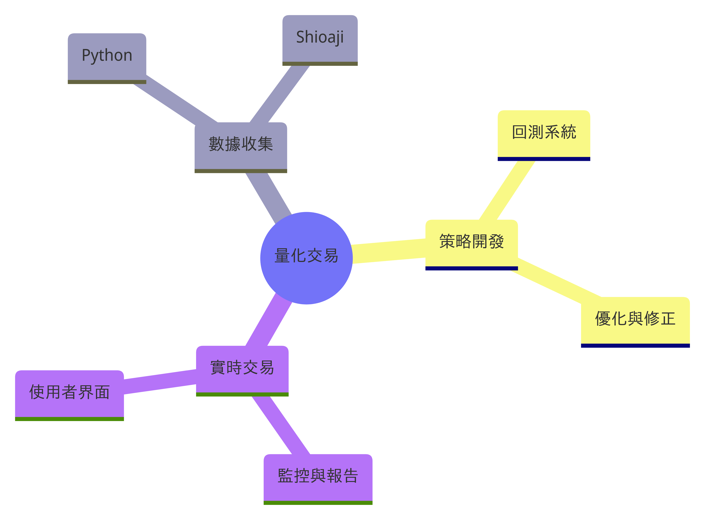
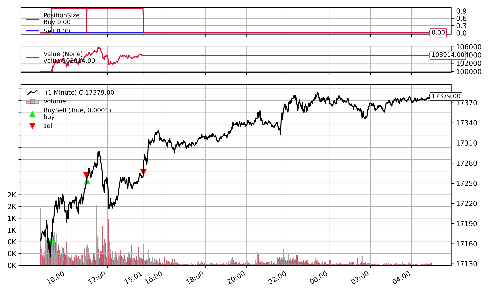
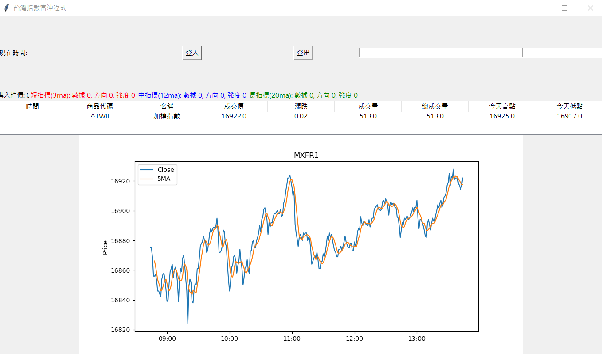

Kaka Pao
量化交易 / Python / ChatGPT
量化交易+ChatGPT
這是一個金融交易策略專案，旨在根據指定的時間窗口，分析市場的開盤高低價，以確定最佳的交易時機。透過精密的數據分析和時間序列邏輯，此策略能夠在特定的時段內，依據市場波動動態做出購買或賣出的決策。此專案不僅提供策略實施的核心代碼，還包括一套完整的後測評估系統，確保策略的有效性和盈利能力。
- 數據收集: 從金融數據源收集市場數據。
- 策略開發: 設計交易策略並確定進出場時機。
- 回測系統: 使用歷史數據評估策略表現。
- 實時交易: 自動執行交易指令。
- 監控與報告: 監控策略表現並提供報告。
- 使用者界面: 網頁界面供使用者查看策略表現。

項目
數據收集

Python、永豐Shioaji、Sqlite來收集Kbar與ticks資料供回測使用。為確保資料的完整性和準確性。
(未來：增進爬蟲功能。)
策略回測
backtrader進行歷史數據模擬，評估策略的過去表現。此階段旨在熟悉回測機制和策略評估，讓交易者在真實投資前能夠對策略進行優化。
(苦戰中)
實時交易
Python、tkinter、永豐Shioaji策略在真實市場環境下的執行。此過程涉及實時數據分析、自動化交易指令的執行，並會根據市場動態調整策略。
(構建中。未來：串接Shioaji、TA-Lib和Line Bot。)
ChatGPT 技術介紹
背景
ChatGPT 是由 OpenAI 開發的先進語言模型。它是基於 GPT (Generative Pre-trained Transformer) 系列中的最新模型，受到大量資料的訓練。
困難與解決方式
除錯非常困難，不知道要如何詢問? 畫面或操作不如預期，描述給chatGPT時，少了辭不達意，多了又乘載不下(已用GPT-4)
© 2023 Kaka Pao. All rights reserved. Designed and created by Mitchell Console